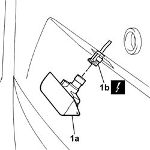

5540A94 l/h or r/h number plate light (one) - r+r
- Path
- Procedures > 55 ELECTRICAL EQUIPMENT > 5540 EXTERIOR LIGHTING > 5540A lighting > 5540A94 l/h or r/h number plate light (one) - r+r
- Kind
- repair procedure (removal / refitting; the operation number is the code)
- Applies to
- all engines; all production periods
- Interactive page
- https://sloeber94.github.io/elrnDB-fDbl/en/#/2584935
Applies to: all engines; all production periods
 Removing
Removing
 Refitting
RefittingDisconnect the battery negative terminal.
1. Remove the cluster (1a) from the seating and disconnect the electrical connector (1b).
 | Name | Connector |
|---|---|---|
1b | Left number plate light |
| Name | Connector |
|---|---|---|
1b | Right number plate light |

Applies to: all engines; all production periods
Refitting
RemovingConnect the electrical connector and fit the number plate light in its seating.
| Name | Connector |
|---|---|---|
- | Left number plate light |
| Name | Connector |
|---|---|---|
- | Right number plate light |